Last class: the agent sees one image (or one screen)
Today: video — the same vision models, many frames over time
For this course we stay visual only — no speech-to-text required
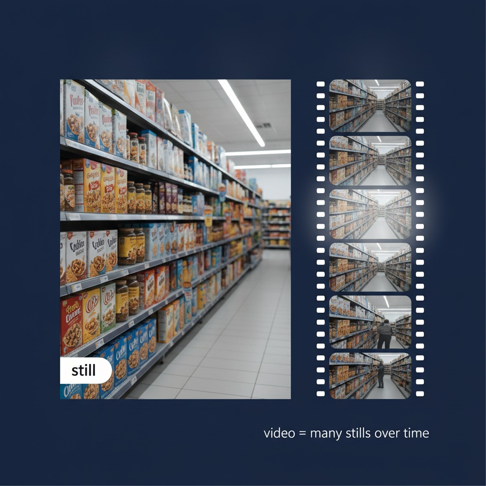
Video Analysis Pipeline
Video is a sequence of images
Sample frames from the video
Send sampled frames to AI for analysis
AI returns a structured answer
1. Video File
Short mp4 file
→
2. Sample Frames
Save frame images
→
3. AI Analysis
→
4. Structured Answer
Description, status, evidence, etc.
FFmpeg: Getting Frames Out
FFmpeg is the standard tool that decodes video files
The imageio-ffmpeg Python package lets us run FFmpeg from code (it bundles the binary)
Your agent calls a Python tool that pulls frames from the video, saves them as image files, then sends those images to the agent chat
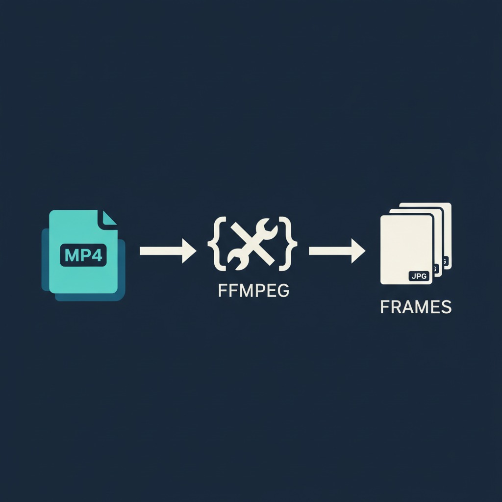
Sampling Frames
Videos are often 30 frames per second (fps) — do not send every frame
AI models handle about 10–20 images well in one request
Sample that many frames from your clip
Fewer, well-chosen frames keep the story clear and the token cost down
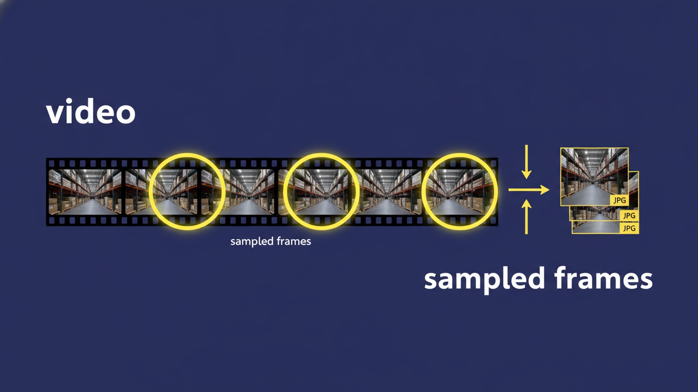
Scene Detection Saves Tokens
FFmpeg scores how different each frame is — keep big jumps as scene cuts
Split a long video into scenes for free, then describe each scene with AI
You choose the dissimilarity threshold — higher means longer scenes; a common default is 0.3
Useful for analysis or narration on longer video — send a few frames per scene, not the whole movie at once
find_scene_changes.py
import subprocess
import imageio_ffmpeg
FFMPEG = imageio_ffmpeg.get_ffmpeg_exe()
def find_scene_changes(video: str, threshold: float = 0.3) -> list[float]:
"""Timestamps (seconds) where FFmpeg sees a scene cut."""
vf = f"select='gt(scene,{threshold})',showinfo"
proc = subprocess.run(
[FFMPEG, "-i", video, "-vf", vf, "-f", "null", "-"],
capture_output=True,
text=True,
)
times = []
for line in proc.stderr.splitlines():
if "pts_time:" in line:
times.append(float(line.split("pts_time:")[1].split()[0]))
return times
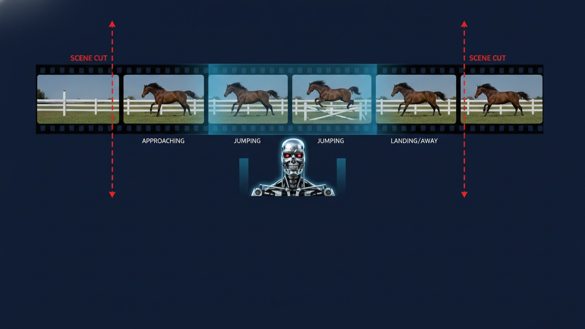
Example A — Spot Check
Short monitoring clip of a work space (freezer room, warehouse aisle, or packing line)
Sample a few frames → structured status card
Manager question: “is this area fine right now?”
Example B — Write Narration
Sample frames from a short clip (reel, demo, walkthrough)
AI describes what happens beat by beat
Agent writes a voiceover script timed to the video
Use case: social post, product tour, class clip
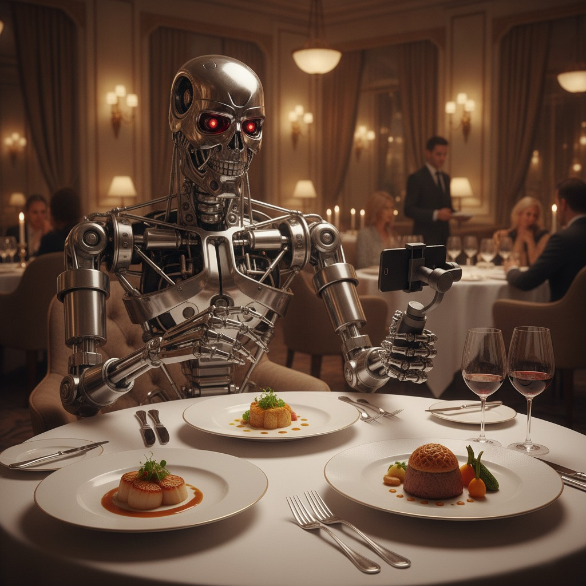
Example C — Incident Timeline
Scan the clip for a spill, jam, fall, or similar event
Return a short timeline: timestamp + what happened
Attach frame paths as evidence for each beat
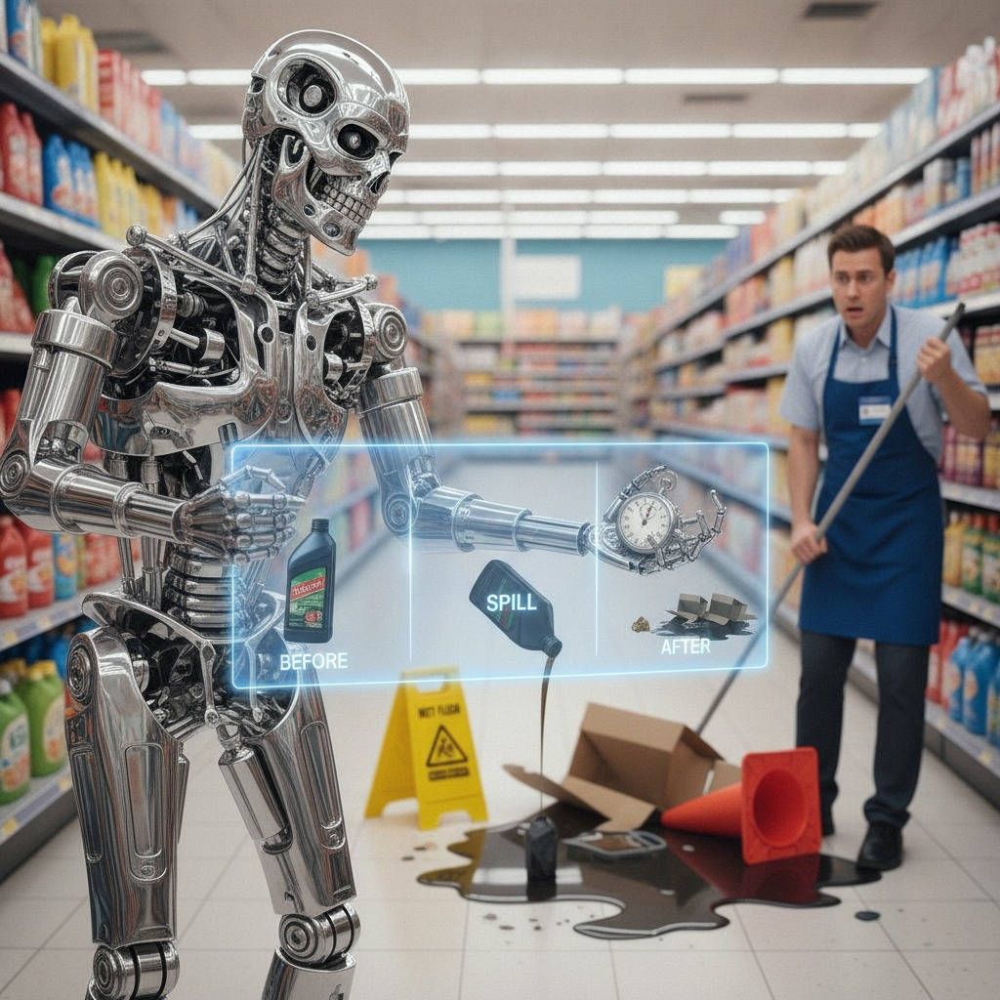
Example D — Highlight Reel
Find the most interesting moments in a longer clip
Return top highlights: timestamp + one-line why
Use case: sports, demos, event footage
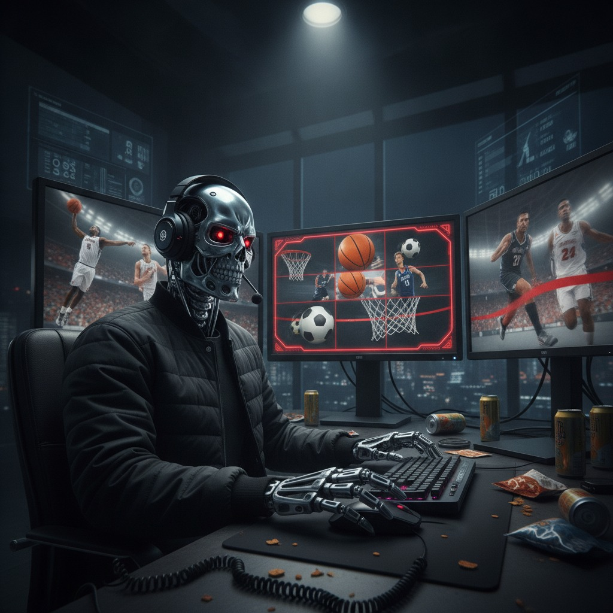
Example E — Patient Monitoring
Watch a bed / room clip for risk signs
Flag fall risk, restlessness, or discomfort when visible
Return status + timestamp + evidence frame (approved use only)
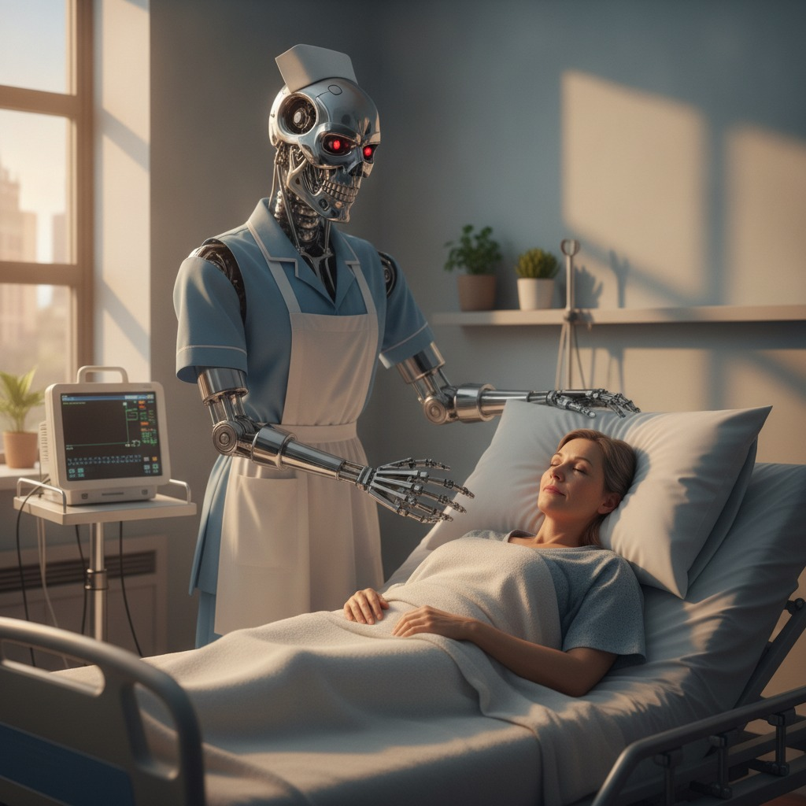
Example F — Immersive Glasses
Camera on glasses sees what the wearer faces
Sample frames → short spoken description of the scene
Assistive use: help a vision-impaired wearer understand what’s ahead
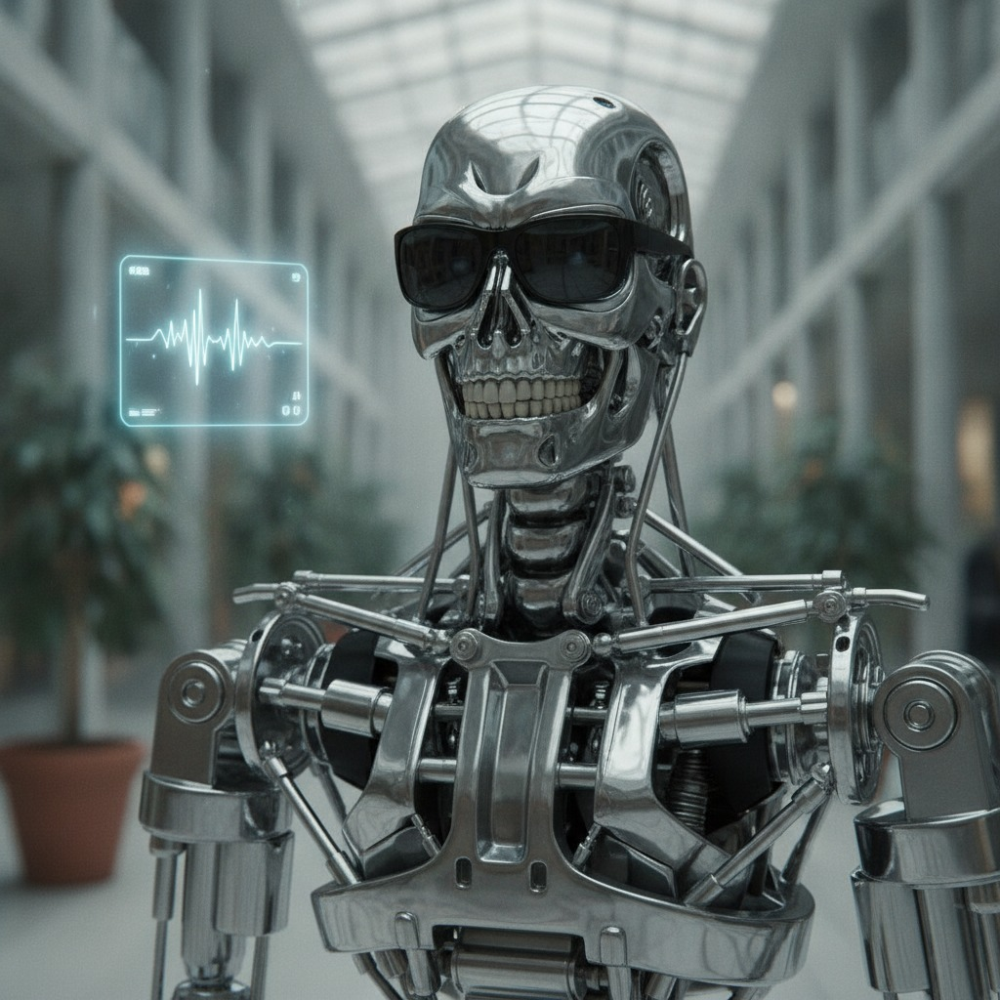
Example G — Event Judge
Score a performance from video — diving, gymnastics, dance, dunks
Return structured scores + a short reason for each score
Referee mode: review a close call or foul and say what the frames show
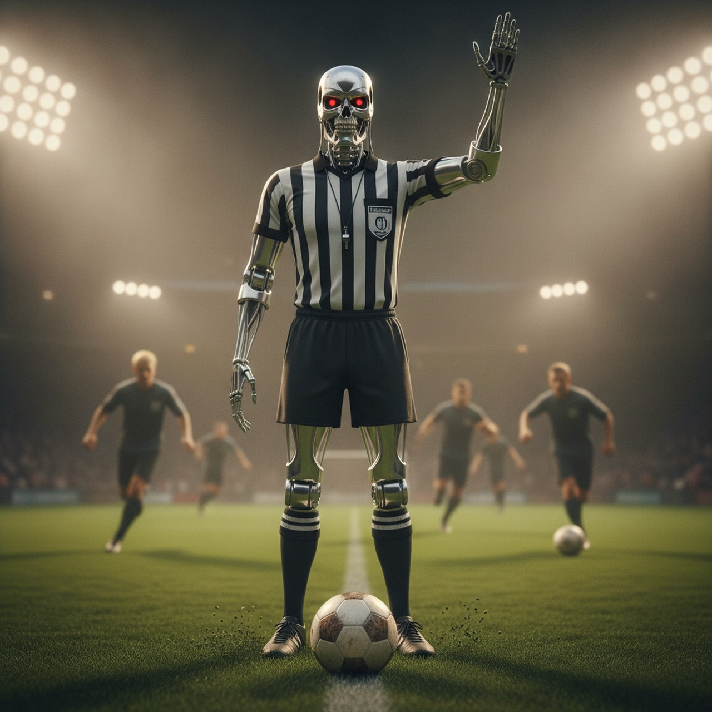
Failure Modes
Sampling too slow — the event happens between frames, so you never see it
Hallucination — the model invents what happened in the gaps
Bad frames — blur, darkness, or the subject off-camera → confident wrong answers
Wrong scene cuts — threshold too low/high → mushy or chopped-up scenes, so summaries drift
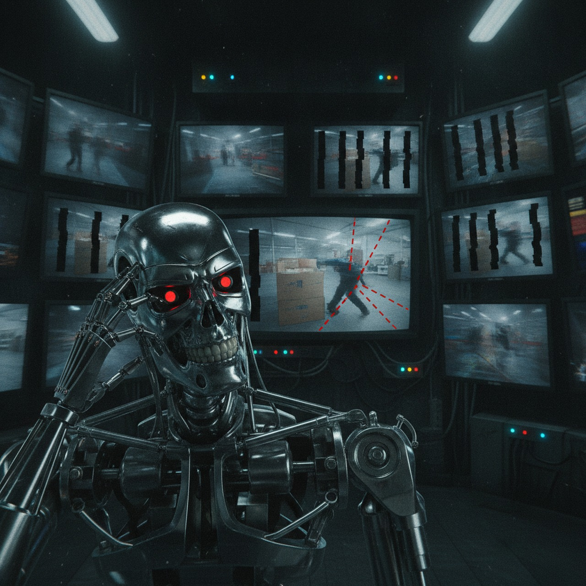
Video Is A Tool
Same agent pattern as last class — new input: a video
PydanticAI: video tool → sample frames → AI → structured output
Monitoring, narration, timelines, highlights, assistive glasses, event judging — longer videos via scene cuts